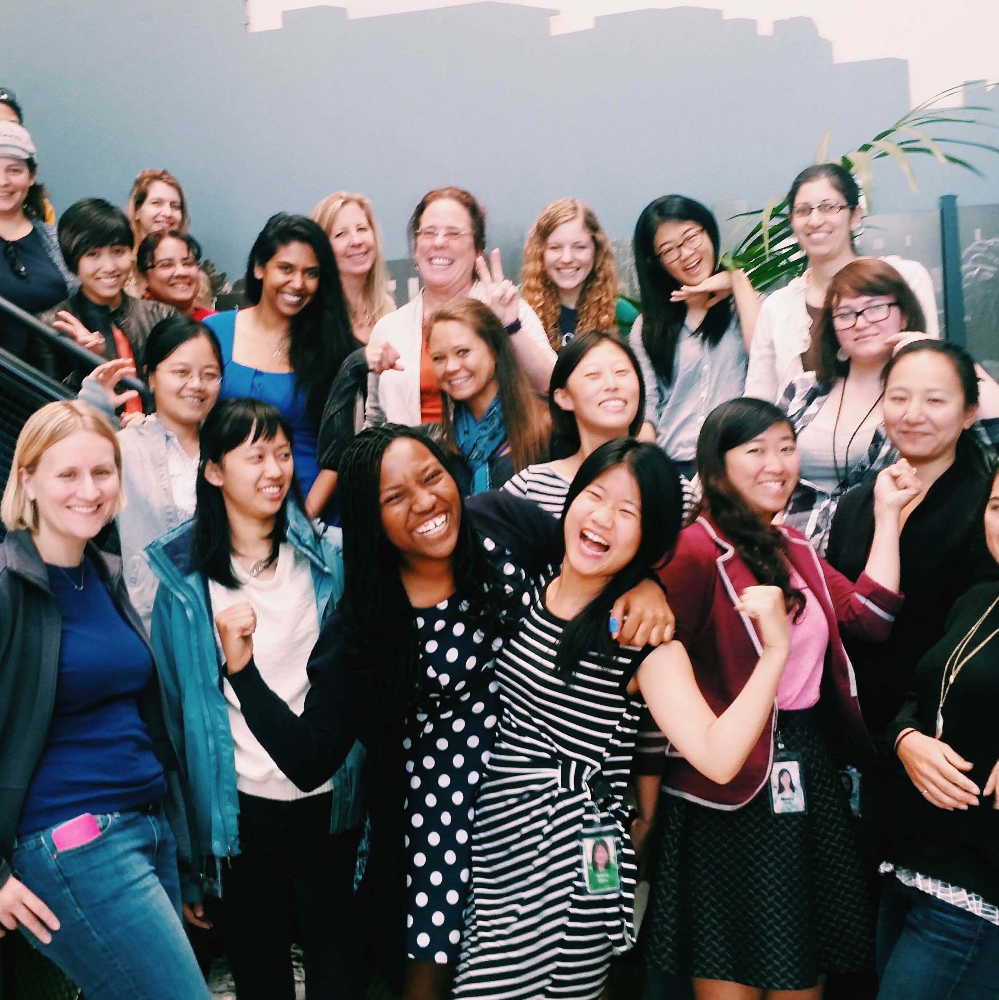
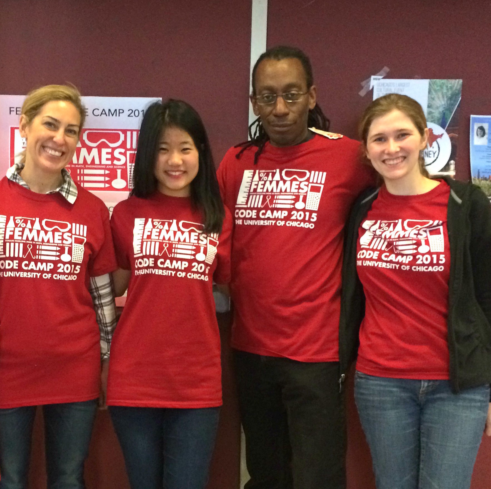
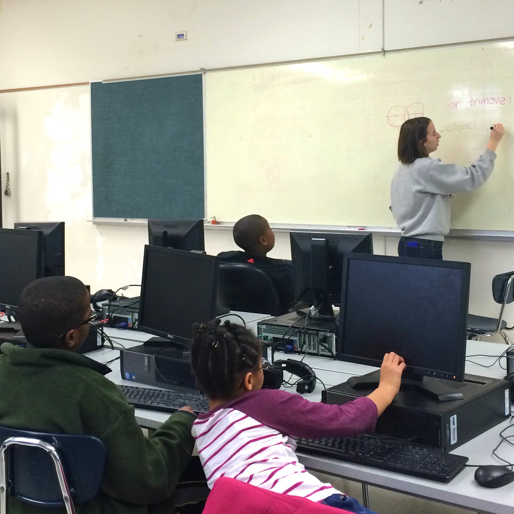

In Zurich, I co-launched a 6-week global mentorship program for new female hires at Google.
Across my Google internships, I've since successfully launched the GWE Mentorship Program in 4 additional countries: Poland, the UK, Israel, and the USA!
We were invited to present our action plan to Google's Global Director of Diversity & Inclusion, Yolanda Mangolini. Additionally, I pitched a GWE community proposal to the SVP of Ads & Commerce, Sridhar Ramaswamy, and successfully secured top-down support and funding to kick off several GWE Mountain View pilot programs.

I co-founded UChicago FEMMES with the mission of bridging the Computer Science gender gap, beginning in our own Hyde Park.
UChicago FEMMES empowers middle school girls from the South Side of Chicago to pursue Computer Science and technology at an age when they typically begin to self-select out of STEM. Core events include the annual UChicago Code Camp and coding workshop series, which bring over 150 local middle school girls to campus for early coding exposure.
Read: A Day at Code Camp

I started a coding club at a local Chicago elementary school to introduce Computer Science to students from diverse socioeconomic backgrounds with minimal prior exposure to the field.
I teamed up with a non-profit advisor and co-instructor to teach fourth- and fifth-graders introductory coding skills on a weekly basis using Processing.js.
I'm incredibly humbled and grateful that I was able to share my passion for coding with my students and have a potential impact on their future career interests.